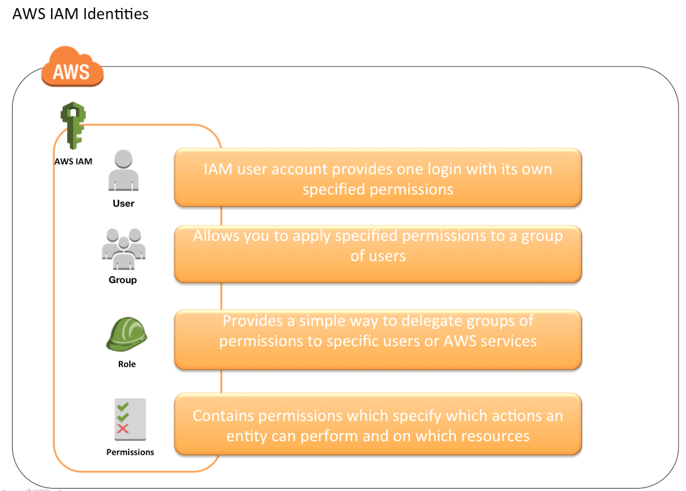
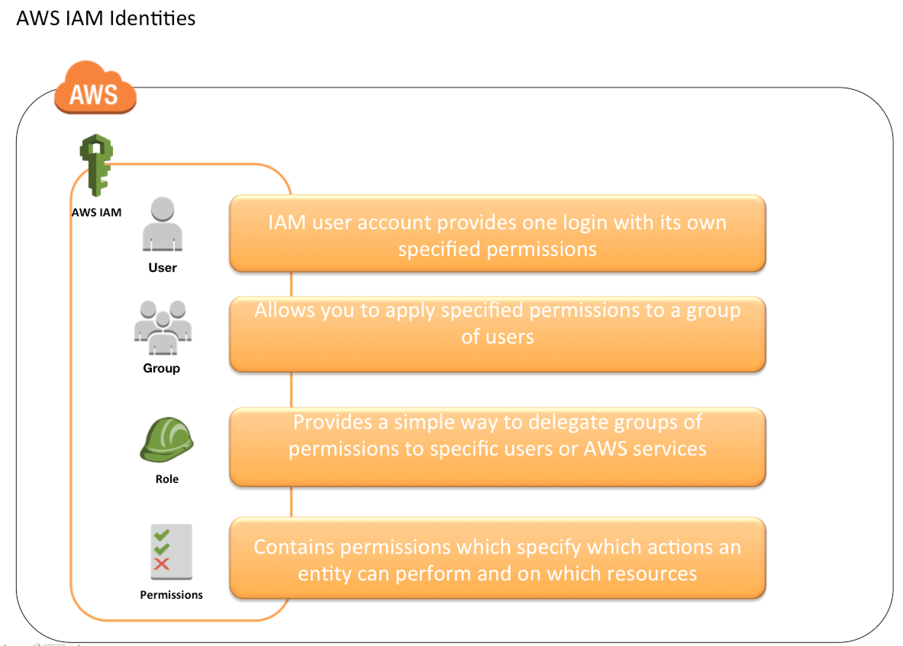

Beschreibung
IAM (Identity and Access Management) ist ein leistungsstarker AWS-Service, der die sichere Verwaltung von
Benutzeridentitäten und Zugriffsrechten für AWS-Ressourcen ermöglicht. Durch die Implementierung von feingranularen
Zugriffskontrollen können Benutzer und Anwendungen nur auf die für ihre Aufgaben relevanten Ressourcen zugreifen.
IAM bietet eine Vielzahl von Funktionen, darunter die Verwaltung von Benutzern, Gruppen und Rollen, die Erstellung
und Anwendung von Berechtigungsrichtlinien sowie die Integration mit anderen AWS-Services für eine umfassende
Sicherheitslösung. Die Verwendung von Multi-Faktor-Authentifizierung (MFA) trägt zur Erhöhung der
Sicherheitsebenen für den Zugriff bei.
Ein zentrales Element von IAM sind die IAM-Richtlinien, die identitätsbasierte Zugriffskontrollen über
Benutzernamen und Passwörter ermöglichen. Diese Richtlinien definieren und regeln die Berechtigungen für
Amazon-Ressourcen und bieten Benutzern und Gruppen eine präzise Kontrolle über ihre Aktivitäten. Dank ihrer
JSON-Formatierung sind IAM-Richtlinien leicht lesbar und unterstützen die Versionierung, um Änderungen im Laufe der
Zeit zu verfolgen.
Zusätzlich bietet IAM den IAM Access Analyzer, der die Einhaltung von Sicherheitsstandards überprüft und
sicherstellt, dass die IAM-Richtlinien dem Prinzip des Least Privilege entsprechen. Dies gewährleistet, dass
nur die erforderlichen Berechtigungen gewährt werden, um Aktionen mit minimalem Berechtigungsgrad
auszuführen.
IAM umfasst auch die Verwaltung von IAM-Benutzern, die Zugriffsschlüssel als langfristige
Anmeldeinformationen verwenden, um automatisierten Zugriff auf AWS-Ressourcen zu ermöglichen. Zugriffsschlüssel
bestehen aus einer Zugriffs-ID und einem geheimen Zugriffsschlüssel und werden für automatisierte Prozesse und
Anwendungen verwendet. Es ist entscheidend, sicherzustellen, dass die Zugriffsschlüssel sicher aufbewahrt werden, um
unbefugten Zugriff zu verhindern.
Darüber hinaus ermöglicht IAM die Verwendung von IAM-Rollen, die ähnlich wie Benutzer funktionieren, jedoch
keine eindeutige Zuordnung zu einer Person haben. Rollen ermöglichen die zeitlich begrenzte Delegierung von
Berechtigungen und sind besonders nützlich, wenn erweiterte Rechte vorübergehend benötigt werden.
IAM-Gruppen vereinfachen die Verwaltung von Berechtigungen für mehrere Benutzer gleichzeitig, da Berechtigungen
einmal für die Gruppe konfiguriert werden können und alle Benutzer in der Gruppe automatisch diese Berechtigungen
erben.
Insgesamt bietet IAM eine präzise Steuerung des Ressourcenzugriffs für AWS-Umgebungen, was zu verbesserten
Sicherheits- und Verwaltungsfunktionen führt.
- IAM (Identitäts- und Zugriffsmanagement):
- IAM ist ein AWS-Service zur sicheren Verwaltung von Benutzeridentitäten, Zugriffsrechten und Berechtigungen für AWS-Ressourcen.
- Feingranulare Zugriffskontrollen ermöglichen es Benutzern und Anwendungen, nur auf relevante Ressourcen zuzugreifen.
- IAM bietet Funktionen wie Benutzerverwaltung, Gruppen und Rollen, Berechtigungsrichtlinien und Integration mit anderen AWS-Services.
- Multi-Faktor-Authentifizierung (MFA) erhöht die Sicherheitsebenen für den Zugriff.
- IAM-Richtlinien ermöglichen eine detaillierte Kontrolle über Aktivitäten und Ressourcen.
- IAM Access Analyzer überprüft IAM-Richtlinien auf Einhaltung von Sicherheitsstandards.
- IAM-Benutzer:
- IAM-Benutzer verwenden Zugriffsschlüssel für den automatisierten Zugriff auf AWS-Ressourcen.
- Zugriffsschlüssel bestehen aus einer Zugriffs-ID und einem geheimen Zugriffsschlüssel.
- IAM-Rolle:
- IAM-Rollen ermöglichen die Delegierung von Berechtigungen ohne eindeutige Zuordnung zu einer Person.
- IAM-Gruppe:
- IAM-Gruppen vereinfachen die Verwaltung von Berechtigungen für mehrere Benutzer gleichzeitig.
- Andere Informationen zu IAM:
- IAM bietet präzise Steuerung des Ressourcenzugriffs für verbesserte Sicherheit und Verwaltbarkeit.
- IAM:
- IAM bietet identitätsbasierte Zugriffskontrolle über Benutzernamen und Passwörter. Dies ermöglicht die Überwachung des Zugriffs auf AWS-Services basierend auf den Identitäten der Benutzer. Obwohl es sich um einen Sicherheitsdienst handelt, nutzt IAM kein maschinelles Lernen, um Bedrohungen und Probleme in Ihrem AWS-Konto zu erkennen.
- IAM-Richtlinie:
- Die IAM-Richtlinie spezifiziert und regelt Amazon-Ressourcenberechtigungen. Es bietet Benutzern und Gruppen eine detaillierte Kontrolle über die Aktivitäten, die sie auf welchen AWS-Ressourcen ausführen können. Die Richtlinie ist als JSON-Dokument formatiert, was das Lesen und Schreiben erleichtert. Sie unterstützt auch die Versionierung, damit Änderungen im Laufe der Zeit verfolgt und Versionen bei Bedarf zurückgesetzt werden können. IAM-Richtlinien ermöglichen eine präzise Zugriffskontrolle und können mit anderen Amazon-Diensten wie AWS CloudTrail integriert werden, um alle API-Aufrufe an AWS-Ressourcen zu protokollieren und zu überwachen.
- IAM Access Analyzer:
- IAM Access Analyzer ermöglicht die Überprüfung von IAM-Richtlinien und die Bewertung der Einhaltung von Sicherheitsstandards (Conformance) mit dem Prinzip des Least Privilege, um die Ausführung von Aktionen mit minimalem Berechtigungsgrad sicherzustellen.
- IAM-Benutzer:
- IAM-Benutzer verwenden Zugriffsschlüssel als langfristige Anmeldeinformationen für den Zugriff auf
AWS-Dienste. Hier sind einige wichtige Punkte zu IAM-Benutzern und Zugriffsschlüsseln:
- Zugriffsschlüssel als Langzeit-Anmeldeinformationen: IAM-Benutzer verwenden Zugriffsschlüssel als langfristige Anmeldeinformationen, um Anfragen an AWS-Dienste zu signieren. Diese Schlüssel ermöglichen automatisierten Zugriff auf AWS-Ressourcen im Namen des Benutzers.
- Struktur der Zugriffsschlüssel: Ein Zugriffsschlüssel besteht aus einer Zugriffs-ID und einem geheimen Zugriffsschlüssel. Diese Struktur ist ähnlich einem Benutzernamen und einem Passwort, wobei die Zugriffs-ID öffentlich ist und der geheime Schlüssel geheim gehalten werden muss.
- Automatisierte Zugriffe: Zugriffsschlüssel werden verwendet, um automatisierte Prozesse und Anwendungen zu authentifizieren, die auf AWS-Dienste zugreifen müssen. Dies kann die Ausführung von Skripten, die Interaktion mit APIs oder den Zugriff auf AWS-Ressourcen über SDKs umfassen.
- Geheime und nicht teilbare Informationen: Die Sicherheit der Zugriffsschlüssel ist entscheidend. Der geheime Zugriffsschlüssel darf nicht geteilt werden und sollte sicher aufbewahrt werden, ähnlich wie ein Passwort. Der Zugriffs-ID hingegen kann offen mitgeteilt werden.
- Verwaltung von Zugriffsschlüsseln: IAM-Benutzer können mehrere Zugriffsschlüssel haben, und sie können diese verwalten, einschließlich der Rotation von Schlüsseln aus Sicherheitsgründen.
- IAM-Benutzer verwenden Zugriffsschlüssel als langfristige Anmeldeinformationen für den Zugriff auf
AWS-Dienste. Hier sind einige wichtige Punkte zu IAM-Benutzern und Zugriffsschlüsseln:
- IAM-Rolle:
- Eine IAM-Rolle ähnelt einem IAM-Benutzer, besitzt jedoch keine eindeutige Zuordnung zu einer Person. Sie repräsentiert eine AWS-Identität mit Berechtigungsrichtlinien, die bestimmen, welche Aktionen in AWS durchgeführt werden können. Rollen können von Bedarfsträgern übernommen werden, und sie ermöglichen die zeitlich begrenzte Delegierung von Berechtigungen. Dies ist besonders nützlich, wenn bestimmten Benutzern vorübergehend erweiterte Rechte gewährt werden müssen.
- IAM-Gruppe:
- Eine IAM-Gruppe ist eine Sammlung von IAM-Benutzern, die es ermöglicht, Berechtigungen für mehrere Benutzer gleichzeitig festzulegen. Dies erleichtert die Verwaltung von Berechtigungen, da sie einmal für die Gruppe konfiguriert werden können und alle Benutzer in dieser Gruppe automatisch diese Berechtigungen erben. Gruppen ermöglichen die zeitlich unbegrenzte Übertragung von Berechtigungen an alle Benutzer innerhalb der Gruppe.
- IAM (Identitäts- und Zugriffsmanagement) ist ein AWS-Service zur sicheren Verwaltung von Benutzeridentitäten, Zugriffsrechten und Berechtigungen für AWS-Ressourcen.
- Feingranulare Zugriffskontrollen ermöglichen es Benutzern und Anwendungen, nur auf relevante Ressourcen zuzugreifen.
- IAM bietet Funktionen wie Benutzerverwaltung, Gruppen und Rollen, Berechtigungsrichtlinien und Integration mit anderen AWS-Services.
- Multi-Faktor-Authentifizierung (MFA) erhöht die Sicherheitsebenen für den Zugriff.
- IAM-Richtlinien ermöglichen eine detaillierte Kontrolle über Aktivitäten und Ressourcen.
- IAM Access Analyzer überprüft IAM-Richtlinien auf Einhaltung von Sicherheitsstandards.
- IAM-Benutzer verwenden Zugriffsschlüssel für den automatisierten Zugriff auf AWS-Ressourcen.
- Zugriffsschlüssel bestehen aus einer Zugriffs-ID und einem geheimen Zugriffsschlüssel.
- IAM-Rollen ermöglichen die Delegierung von Berechtigungen ohne eindeutige Zuordnung zu einer Person.
- IAM-Gruppen vereinfachen die Verwaltung von Berechtigungen für mehrere Benutzer gleichzeitig.
- IAM bietet präzise Steuerung des Ressourcenzugriffs für verbesserte Sicherheit und Verwaltbarkeit.
Schlüsselwörter
Schlüsselworte bzw. Schlagworte sollen uns dabei helfen, einen Service leichter zu erkennen, wenn es um Prüfungsfragen geht. Ließ dir die Fragen richtig durch und achte auf folgende Schlüsselworte. Sie können dir bei der Beantwortung der Fragen helfen.
- Identitäts- und Zugriffsmanagement
- Kontrolle über AWS-Ressourcenzugriffe
- Benutzer-, Gruppen- und Rollenverwaltung
- Feingranulare Zugriffsberechtigungen
- Multi-Faktor-Authentifizierung (MFA)
- Integration mit Active Directory (AD)
- Zugriffsrichtlinien auf Ressourcenebene
- Sicherheitsüberwachung und -berichterstattung
- Temporäre Zugriffsberechtigungen (IAM-Rollen)
- Unterstützung für Identitätsföderation (z. B. SAML)
Grafische Erklärung
 

Prüfung Fragen
- Wie kann AWS Identity and Access Management (IAM) Unternehmen dabei unterstützen, Sicherheitsrisiken zu minimieren und Compliance-Anforderungen zu erfüllen?
- Wie können Unternehmen IAM-Richtlinien effektiv konfigurieren, um den Zugriff auf AWS-Ressourcen basierend auf den individuellen Rollen und Verantwortlichkeiten der Benutzer zu steuern?
- Wie unterscheidet sich IAM von anderen AWS-Sicherheitsdiensten wie AWS Shield oder AWS WAF?